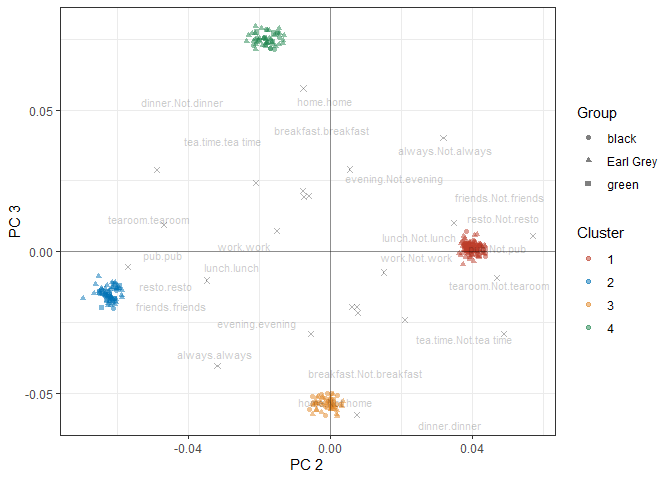
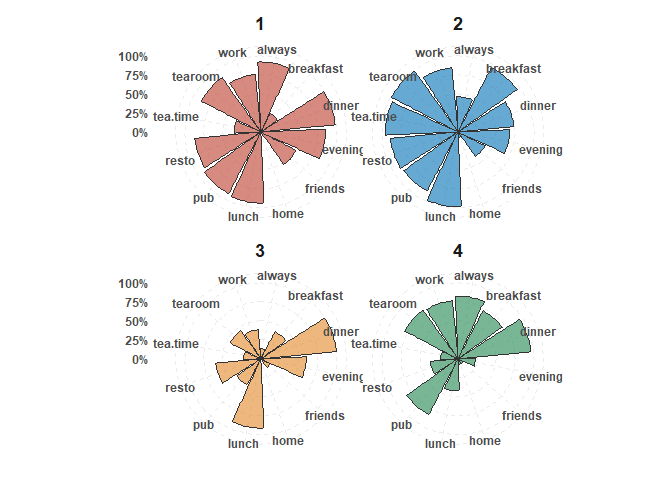
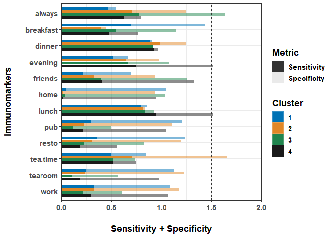

Useage
The goal of TEST is to unsupervised machine learning analysis process integration (including feature selection, dimension reduction, group analysis, visualization of group results, etc.)
This is a basic example which shows you how to solve a common problem:
library(TEST)
library(FactoMineR)
library(tidyverse)
library(reshape2)
library(data.table)
library(knitr)
## basic example code
#for categorical dataset with combine dimention reduction & clustering method example
data(tea)
# I. Data doing feature selection + dimention reduction + clustering with result presentation for distribution of variables
emr_cat<-emr_clust(tea[,1:13],
method =c("MCAk"),
kmoCutoff = 0.5,
nclus=c(4:5),
ndim=c(2:3),
group="Tea",
nstart=50)
#>
#> bartlett_results isn't significant
#> [1] "Running for 4 clusters and 2 dimensions..."
#> | | | 0% | |======= | 10% | |============== | 20% | |===================== | 30% | |============================ | 40% | |=================================== | 50% | |========================================== | 60% | |================================================= | 70% | |======================================================== | 80% | |=============================================================== | 90% | |======================================================================| 100%[1] "Running for 4 clusters and 3 dimensions..."
#> | | | 0% | |======= | 10% | |============== | 20% | |===================== | 30% | |============================ | 40% | |=================================== | 50% | |========================================== | 60% | |================================================= | 70% | |======================================================== | 80% | |=============================================================== | 90% | |======================================================================| 100%[1] "Running for 5 clusters and 2 dimensions..."
#> | | | 0% | |======= | 10% | |============== | 20% | |===================== | 30% | |============================ | 40% | |=================================== | 50% | |========================================== | 60% | |================================================= | 70% | |======================================================== | 80% | |=============================================================== | 90% | |======================================================================| 100%[1] "Running for 5 clusters and 3 dimensions..."
#> | | | 0% | |======= | 10% | |============== | 20% | |===================== | 30% | |============================ | 40% | |=================================== | 50% | |========================================== | 60% | |================================================= | 70% | |======================================================== | 80% | |=============================================================== | 90% | |======================================================================| 100% | | | 0% | |======= | 10% | |============== | 20% | |===================== | 30% | |============================ | 40% | |=================================== | 50% | |========================================== | 60% | |================================================= | 70% | |======================================================== | 80% | |=============================================================== | 90% | |======================================================================| 100%
#show the tuning output table
kable(head(emr_cat$clust_out$tune_table),"html")| Dim2 | Dim3 | |
|---|---|---|
| 4 | 0.166 | 0.198 |
| 5 | 0.127 | 0.171 |
| PC 1 | PC 2 | PC 3 | Cluster | breakfast | tea.time | evening | lunch | dinner | always | home | work | tearoom | friends | resto | pub | Tea | Group |
|---|---|---|---|---|---|---|---|---|---|---|---|---|---|---|---|---|---|
| 0.0285252 | 0.0402456 | 0.0004505 | 1 | breakfast | Not.tea time | Not.evening | Not.lunch | Not.dinner | Not.always | home | Not.work | Not.tearoom | Not.friends | Not.resto | Not.pub | black | black |
| 0.0285252 | 0.0402456 | 0.0004505 | 1 | breakfast | Not.tea time | Not.evening | Not.lunch | Not.dinner | Not.always | home | Not.work | Not.tearoom | Not.friends | Not.resto | Not.pub | black | black |
| -0.0374653 | -0.0216717 | 0.0733575 | 4 | Not.breakfast | tea time | evening | Not.lunch | dinner | Not.always | home | work | Not.tearoom | friends | resto | Not.pub | Earl Grey | Earl Grey |
| 0.0457808 | -0.0630318 | -0.0145051 | 2 | Not.breakfast | Not.tea time | Not.evening | Not.lunch | dinner | Not.always | home | Not.work | Not.tearoom | Not.friends | Not.resto | Not.pub | Earl Grey | Earl Grey |
| 0.0244414 | 0.0363576 | -0.0007369 | 1 | breakfast | Not.tea time | evening | Not.lunch | Not.dinner | always | home | Not.work | Not.tearoom | Not.friends | Not.resto | Not.pub | Earl Grey | Earl Grey |
| 0.0457808 | -0.0630318 | -0.0145051 | 2 | Not.breakfast | Not.tea time | Not.evening | Not.lunch | dinner | Not.always | home | Not.work | Not.tearoom | Not.friends | Not.resto | Not.pub | Earl Grey | Earl Grey |
| Variable | PC 1 | PC 2 | PC 3 |
|---|---|---|---|
| breakfast.breakfast | -0.0059411 | 0.0470162 | -0.0093285 |
| breakfast.Not.breakfast | 0.0059411 | -0.0470162 | 0.0093285 |
| tea.time.Not.tea time | 0.0339959 | -0.0348613 | -0.0101065 |
| tea.time.tea time | -0.0339959 | 0.0348613 | 0.0101065 |
| evening.evening | -0.0284692 | -0.0209811 | 0.0241691 |
| evening.Not.evening | 0.0284692 | 0.0209811 | -0.0241691 |
| Ori_Variable | Variable | black (n = 74) | Earl Grey (n = 193) | green (n = 33) | p value |
|---|---|---|---|---|---|
| always | Not.always | 55 (74.32) | 119 (61.66) | 23 (69.70) | 0.130 |
| always | 19 (25.68) | 74 (38.34) | 10 (30.30) | ||
| breakfast | Not.breakfast | 34 (45.95) | 100 (51.81) | 22 (66.67) | 0.140 |
| breakfast | 40 (54.05) | 93 (48.19) | 11 (33.33) | ||
| dinner | Not.dinner | 71 (95.95) | 179 (92.75) | 29 (87.88) | 0.311 |
| dinner | 3 (4.05) | 14 (7.25) | 4 (12.12) |
#Biplot of the first and second principal components
emr_cat$biplot$clustering_biplots
#> [[1]]
#>
#> [[2]]
#Profile the number and proportion of case in each cluster
emr_cat$biplot$profile_by_cluster_integrated
#Profile the number and proportion of case in each group
emr_cat$biplot$profile_by_group_integrated
# II. Visualization
# 1. Wind_rose_plot
pic<-wind_rose_plot(clustering_output = emr_cat, plot_value = "Not" )
pic$overlapped
pic$seperated
# 2. Sensitivity + Specificity plot
sen_spe_out<-sen_spe(clustering_output = emr_cat)
sen_spe_out
#for numerical dataset with seperate dimention reduction & clustering method example
data(iris)
# I. Data feature selection + dimention reduction + clustering with result presentation for distribution of variables
emr_numeric<-emr_clust(iris,
method =c("PCA","Kmean"),
center = TRUE,
scale = TRUE,
kmoCutoff = 0.5,
nclus=c(4:5),
ndim=c(2:3),
group="Species",
attr.params=list( fill="blue", color="darkred"),
text.params=list(alpha = 0.9))
#>
#> bartlett_results isn't significant
#show the tuning output table
kable(head(emr_numeric$clust_out$tune_table),"html")| Dim2 | Dim3 | |
|---|---|---|
| 4 | 0.4408934 | 0.4255930 |
| 5 | 0.4143378 | 0.3529726 |
| PC 1 | PC 2 | Cluster | Sepal.Length | Sepal.Width | Petal.Length | Petal.Width | Species | Group |
|---|---|---|---|---|---|---|---|---|
| -2.257141 | -0.4784238 | 3 | 5.1 | 3.5 | 1.4 | 0.2 | setosa | setosa |
| -2.074013 | 0.6718827 | 1 | 4.9 | 3.0 | 1.4 | 0.2 | setosa | setosa |
| -2.356335 | 0.3407664 | 1 | 4.7 | 3.2 | 1.3 | 0.2 | setosa | setosa |
| -2.291707 | 0.5953999 | 1 | 4.6 | 3.1 | 1.5 | 0.2 | setosa | setosa |
| -2.381863 | -0.6446757 | 3 | 5.0 | 3.6 | 1.4 | 0.2 | setosa | setosa |
| -2.068701 | -1.4842053 | 3 | 5.4 | 3.9 | 1.7 | 0.4 | setosa | setosa |
| Variable | PC 1 | PC 2 | PC 3 | PC 4 |
|---|---|---|---|---|
| Sepal.Length | 0.5210659 | -0.3774176 | 0.7195664 | 0.2612863 |
| Sepal.Width | -0.2693474 | -0.9232957 | -0.2443818 | -0.1235096 |
| Petal.Length | 0.5804131 | -0.0244916 | -0.1421264 | -0.8014492 |
| Petal.Width | 0.5648565 | -0.0669420 | -0.6342727 | 0.5235971 |
| Ori_Variable | Variable | setosa (n = 50) | versicolor (n = 50) | virginica (n = 50) | p value |
|---|---|---|---|---|---|
| Petal.Length | 1.5 ( 0.2) | 4.3 ( 0.5) | 5.6 ( 0.6) | <0.001 | |
| Petal.Width | 0.2 ( 0.1) | 1.3 ( 0.2) | 2.0 ( 0.3) | <0.001 | |
| Sepal.Length | 5.0 ( 0.4) | 5.9 ( 0.5) | 6.6 ( 0.6) | <0.001 | |
| Sepal.Width | 3.4 ( 0.4) | 2.8 ( 0.3) | 3.0 ( 0.3) | <0.001 |
#Biplot of the first and second principal components
emr_numeric$biplot$clustering_biplots
#> [[1]]
#Profile the number and proportion of case in each cluster
emr_numeric$biplot$profile_by_cluster_integrated
#Profile the number and proportion of case in each group
emr_numeric$biplot$profile_by_group_integrated
You’ll still need to render README.Rmd regularly, to keep README.md up-to-date. devtools::build_readme() is handy for this. You could also use GitHub Actions to re-render README.Rmd every time you push. An example workflow can be found here: https://github.com/r-lib/actions/tree/v1/examples.
In that case, don’t forget to commit and push the resulting figure files, so they display on GitHub and CRAN.